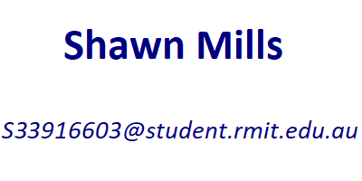

ASSESMENT TASK 3
Team Project
 |
 |  |
 |
 |
|---|
The overall goal is defined and clear. Create a smartphone application that converts electrical resistance to temperature in Kelvin, degrees Celsius and degrees Fahrenheit, with an additional function to realise a fault tolerance based on the resulting temperature. This can be separated into several smaller goals, and will be focused on individually throughout the project plan and development stage.
The main achievement will be to simply get an APK (Android Package File) installed onto a smartphone, that accurately converts resistance to temperature. Without this function, any follow up features or milestones will not be achievable, nor will we be able to product test and further develop any intuitive designs. Given the limited time and resources, this is our main focus.
To follow, we would consider integrating an option to choose different temperature units. We would initially focus on degrees Celsius, but once we have achieved our main goal, it would not be a hard stretch to implement perhaps a drop-down menu so the user may choose their desired temperature unit. It would be a matter of running the result through a second formula, depending on the user’s selection, to convert degrees Celsius to another unit.
It was mentioned that a tolerance calculator would be beneficial, and we stand by this statement. That being said, this feature would take back seat, but it is not to be considered unfeasible. It is simply another formula the result needs to pass through.
We would endeavour to implement some intuitive graphical elements to the application once we were happy all the calculations were working well. This would involve choosing appropriate graphic themes, fonts and making the app appealing. Compared to the Isotech windows program, we would aim to make it appear much more modern and user friendly.
Once we are satisfied with the theme, we would perhaps branch out into the world of temperature measurement. To be sure, resistance temperature devices make up but a small component of thermometry. We could consider all the different types of thermocouples, which functions under a completely different principle of electricity entirely. Instead of resistance, we are using the Seebeck effect to measure the electro magnetic force generated by a conductor when exposed to a temperature gradient. These thermocouples have their own rules and formulas to integrate into the app.
Finally, we would investigate how to make the application available to users who need it. It is to be seen that we would have a working android app, publishable on the google play store, but would consider following up with perhaps an iPhone version to be published on the Appstore. Further to this, we would need to investigate how to market and let people know about our app. This may involve discussing with sensor manufacturers, or calibration laboratories.